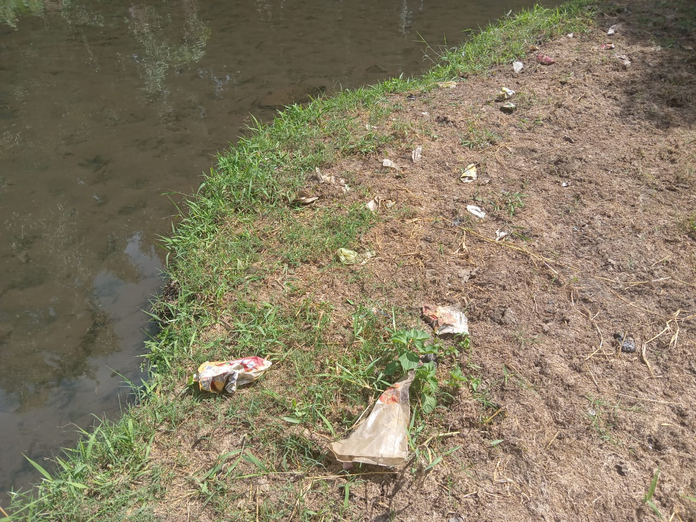

En la zona hay un cuerpo de agua naciente, por lo tanto, se ha vuelto un lugar de recreación entre los habitantes locales y sus alrededores, se pudo observar niveles altos de basura, encontrándose con objetos como botellas, latas, colillas, prendas de vestir, deshechos biológicos como pañales de bebé, entre otros.
Si bien en la zona no cuentan con camiones de basura, es importante que eso no sea un impedimento para depositar y hacer una gestión eco-amigable con ella, pues ahí no solo se está perjudicando a la vida humana, también se afecta a la calidad del suelo, del agua, y a la fauna local.
